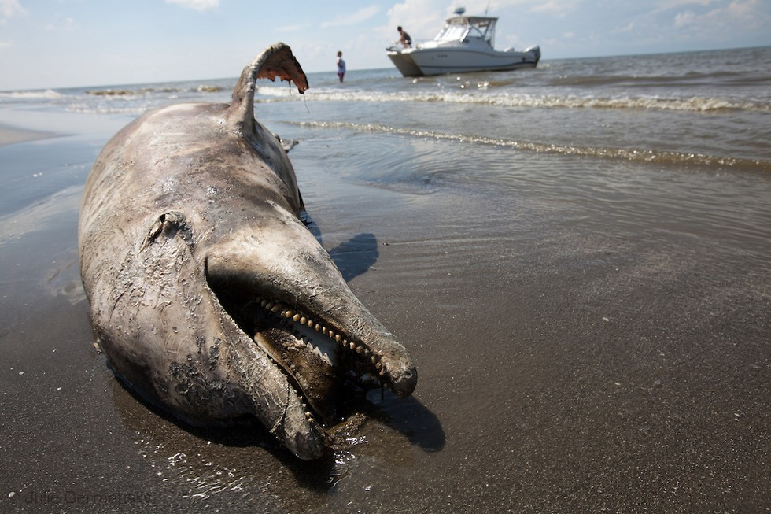

In general, oil spills are when ships carrying oil flip over and cause a dramatic change in the sea. The oil that the ships are carrying are most likely toxic, and can remain on the ocean's surface for decades if not cleaned up. It is important that we understand the impacts the oil have on marine animals to help them recover much more quickly.
Spilled oil can harm living things because of its chemical constituents. This can affect the marine animals from both internal exposure of oil through ingestion or inhalation from external exposure through skin and eye irritation.
Moreoever, oil can also amother some small species of fish or birds such as coating the feathers and fur and reducing the birds' ability to maintain their body temperatures.

1. Seabirds
Oil spills most affected the seabirds that are found on the sea surface and or on shorelines if the oil is washed ashore. During most of the oil spills, seabirds are harmed and most importantly killed in great numbers. The oil can smother the birds' furs and make their ability to stay warm no longer an ability.
2. What Type of Oil Causes The Most Harm?
There are different types of oil that behave differently and affect different types of marine animals. We should distinguish between light and heavy oils. Some light oils include gasoline and disel fuel. Light oils are very volatile so they don't usually remain on the ocean surface for very long. This doesn't mean that light oils are not a hazard. First, some light oils can ignite or explode. Second, many light oils are considered to be relatively toxic. In contrast, very heavy oils such as bunker oils look black and might be sticky until they weather, will remain on the ocean surface for years if not removed. Heavy oils are generally less toxic than lighter oils.